2.3 Tipos de Erros
Em geral, os números não são representados de forma exata nos computadores. Isto nos leva ao chamado erro de arredondamento. Quando resolvemos problemas com técnicas numéricas estamos sujeitos a este e outros tipos de erros. Nesta seção, veremos quais são estes erros e como controlá-los, quando possível.
Quando fazemos aproximações numéricas, os erros são gerados de várias formas, sendo as principais delas as seguintes:
- Incerteza dos dados: equipamentos de medição possuem precisão finita, acarretando erros nas medidas físicas.
- Erros de Arredondamento: são aqueles relacionados com as limitações que existem na forma representar números de máquina.
- Erros de Truncamento: surgem quando aproximamos um procedimento formado por uma sequência infinita de passos através de um procedimento finito. Por exemplo, a definição de integral é dada por uma soma infinita e a aproximamos por um soma finita. O erro de truncamento deve ser analisado para cada método empregado.
Uma questão fundamental é a quantificação dos erros que estamos sujeitos ao computar a solução de um dado problema. Para tanto, precisamos definir medidas de erros (ou de exatidão). As medidas de erro mais utilizadas são o erro absoluto e o erro relativo.
Definição 2.3.1 (Erro absoluto e relativo). Seja  um número real e
um número real e
 sua aproximação. O erro absoluto da aproximação
sua aproximação. O erro absoluto da aproximação  é definido
como
é definido
como
 |
O erro relativo da aproximação 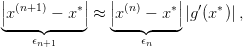 é definido como
|
|
Observação 2.3.1. Observe que o erro relativo é adimensional e, muitas vezes, é
dado em porcentagem. Mais precisamente, o erro relativo em porcentagem da
aproximação  é dado por
é dado por
 |
 e sua aproximação
e sua aproximação  .
O erro absoluto é
.
O erro absoluto é


Exemplo 2.3.2. Sejam  e 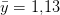. O erro absoluto é
e 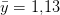. O erro absoluto é


Outra forma de medir a exatidão de uma aproximação numérica é contar o número de dígitos significativos corretos em relação ao valor exato.
Definição 2.3.2 (Número de dígitos significativos corretos). A aproximação
 de um número 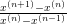 tem
de um número 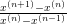 tem  dígitos significativos corretos quando4
dígitos significativos corretos quando4

Exemplo 2.3.4. Vejamos os seguintes casos:
- A aproximação de
 por
por  tem
tem  dígitos
significativos corretos, pois
dígitos
significativos corretos, pois

- Considere as aproximações 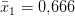 e 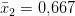 de 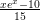. Os
erros relativos são

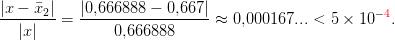 Note que possui
possui  dígitos significativos corretos e
dígitos significativos corretos e  possui
possui  dígitos significativos (o quarto dígito é o dígito
dígitos significativos (o quarto dígito é o dígito  que não aparece a
direita, i.e,
que não aparece a
direita, i.e,  . Isto também leva a conclusão que
. Isto também leva a conclusão que  aproxima melhor o valor de
aproxima melhor o valor de  do que
do que  pois está mais próximo de
pois está mais próximo de
 .
.
- 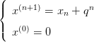 aproxima
 com
com  dígitos significativos corretos,
pois
dígitos significativos corretos,
pois
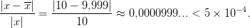 - Considere as aproximações
 e 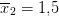 de
e 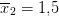 de  . Da
definição, temos que
. Da
definição, temos que  aproxima
aproxima  com um dígito significativo
correto (verifique), equanto
com um dígito significativo
correto (verifique), equanto  tem zero dígito significativo correto,
pois:
tem zero dígito significativo correto,
pois:

2.3.1 Erros de arredondamento
Os erros de arredondamento são aqueles gerados quando aproximamos um número real por um número com representação finita.
Existem várias formas de arredondar
 |
usando 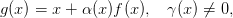 dígitos significativos. As duas principais são as seguintes:
- Arredondamento por truncamento (ou corte): aproximamos
 por
por

 com
com  .
.
- Arredondamento por proximidade: se
 aproximamos
aproximamos  por
por
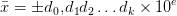 senão aproximamos por5
por5

Observação 2.3.2. Observe que o arredondamento pode mudar todos os dígitos e o expoente da representação em ponto flutuante de um número dado.
Exemplo 2.3.5. Represente os números
 , 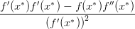,
, 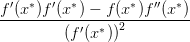,  e
e  com
dois dígitos significativos por truncamento e arredondamento.
com
dois dígitos significativos por truncamento e arredondamento.
Solução. Vejamos cada caso:
- Por truncamento:

No Scilab, podemos obter a representação de
 fazendo
(verifique):
-->format(’e’,8)
fazendo
(verifique):
-->format(’e’,8)
-->int(-0.675*1e2)/1e2 - Por arredondamento:
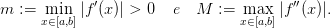 No Scilab, a representação de números por arredondamento é o padrão. Assim, para obtermos a representação desejada de 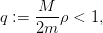 fazemos: podemos obter a representação de
 fazemos
(verifique):
-->format(’e’,8)
fazemos
(verifique):
-->format(’e’,8)
-->-0.675

 com
com  dígitos
significativos é
dígitos
significativos é  .
.
2.3.2 Exercícios
 para
para
 .
.
 e
e 
 e 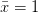
e 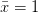
 e 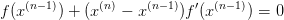
e 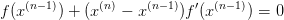


Resposta. a) 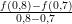; b)  ; c)
; c)  ; d)
; d)  ; e) ; f)
; e) ; f) 

 para
para  .
.
 e
e 
 e
e 
E 2.3.4. Represente os números  ; 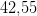 e
; 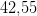 e  com três
dígitos significativos por truncamento e arredondamento.
com três
dígitos significativos por truncamento e arredondamento.
E 2.3.5. Resolva a equação  usando arredondamento com
três dígitos significativos em cada passo e compare com o resultado analítico
usando arredondamento com
três dígitos significativos em cada passo e compare com o resultado analítico
E 2.3.6. Calcule o erro relativo e absoluto envolvido nas seguintes aproximações e expresse as respostas com três algarismos significativos corretos.
- 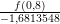 e

 e 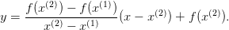
e 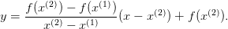
Resposta. a)  ,
,  ; b)
; b)  , 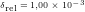
, 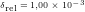